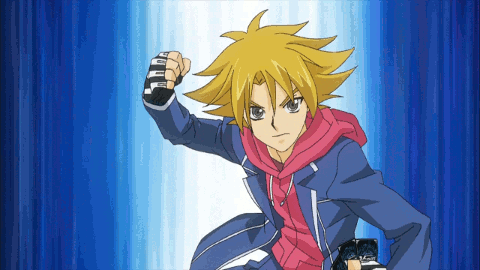
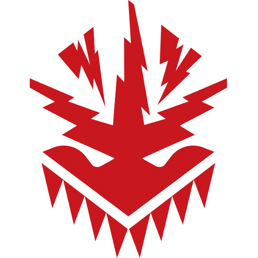

Dragon Empire

Kagero "Play Style"
Kagero's goal is to burn opponent's resources. The main way they do this is by retiring the opponent's rear-guards to gain advantages and weaken, or outright ruin, the opponent's battle formation. The "Blaze" keyword, primarily used by the Blademaster series, activates if the player has more rear-guards than the opponent.
How to Play
The "Overlord' archetype focuses on restanding the Vanguard after it attacks a rear-guard, allowing the player to burn the opponent's field and do more Drive Checks simultaneously. This is the more aggresive build for Kagero which also have great toolboxing for unfliping damage and to burn rearguard indirectly as well.
The "Perdition" archetype retire rear-guards based on columns. This is meant to use your abilities rarely since you burn more units within a turn compared to the other archetypes.
The "Seal Dragon" archetype replaces the rear-guards they retire with grade 2 rear-guards, then punish the opponent for having those grade 2 rear-guards. Their ability to unflip damage while burning the opponent is extremely pheomenal, perhaps one of the best in the game. So dont worry about Counterblasting too much since your unfliping 2 damage for each retire by effect.
The "Blademaster" archetype is based on using the keyword "Blaze" to activate extra effects. This is mostly a control deck with a splash of aggresiveness toward late game pressure.

Narukami "Play Style"
Narukami's focuses on retiring the opponent's rear-guards to some extent, from actual retiring or gaining the ability to attack multiple units, causing the opponent to guard each unit or lose those who remain unguarded. Narukami recently gained the ability to bind units starting in Cardfight!! Vanguard G. Some units can retire an opponent's rear-guard, and then bind said card once it enters the Drop Zone, while some cards can bind a card directly from the Drop Zone. The cards are bound face up, and the binds are permanent and fuel the clan's keyword "Thunderstrike", which allows units to gain power and effects depending on the number of cards in the opponent's Bind Zone.
How to Play
The "Vanquisher" archetype focuses on binding cards from the drop zone after they've been retired, while also gaining power from binding cards. Vanquisher relies on its support to bind most of the opponent's cards while Vanquisher itself bases its offensive and defensive powers from each bind. Each of the grade 4's have their own form of pressure; the original has the ability to grant an immense amount of power dependent on the number of cards in the opponent's bind zone, while the evolved form takes another archetype's playstyle and makes it more devastating by dealing the opponent an extra damage if their field is empty after it attacks.
The "Eradicator" archetype is based on freely retiring your opponent's rear guards at the greatest of ease. There is no way of escaping from retirement by the eradicators since they have no restrictions on who they retire and on top of that, they get bonuses while they're retiring.
The "Brawler" archetype is based on punching multiple or all rear guards your opponent controls all at once and gain bonuses for each time they hit something in general. This deck is meant to keep your opponent on their toes on who they're gonna call to the field.